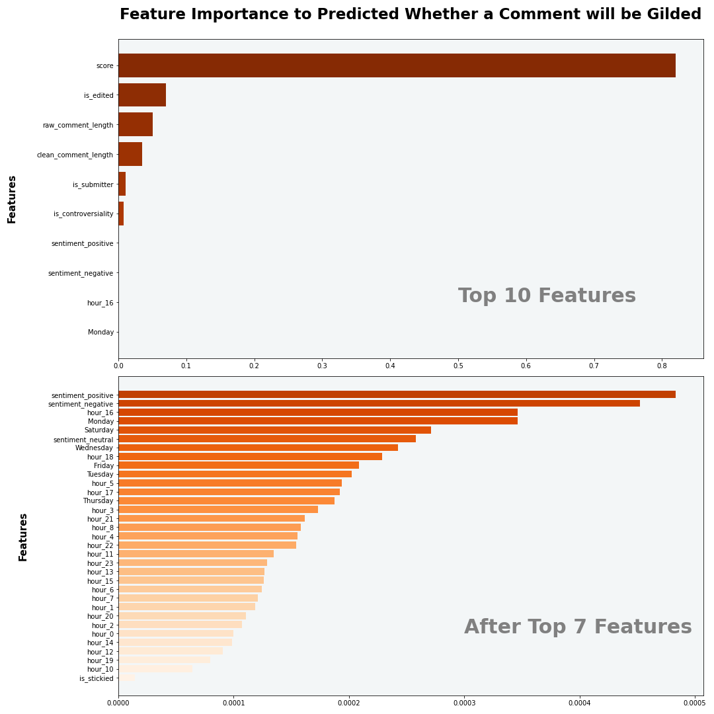

Milestone 3: Machine Learning
Pages
Executive Summary
As the biggest channel on Reddit, the “AskReddit” subreddit contains a huge amount of questions and answers. When people try to dive into this ocean of Q&As, some may want their answers to be more valuable as they could get gilded from the thankful viewers, while others might just want to maintain their manners and become a part of the grand audience. Thus, in order to explore the potential strategies for an AskReddit user to make hot/proper comments, we performed machine learning techniques to drill into two of the business goals proposed earlier:
- Business goal 1: What posts are more likely to be gilded and whether controversiality is an important factor to be gilded?
- Business goal 4: What kind of accounts are more likely to be cancelled?
With the help of machine learning models and feature importance plots, we conclude that posts with a higher “score”(a feature calculated by subtracting the number of dislikes from the number of likes) are more likely to be gilded and “controversiality” is also an important factor to be considered. Moreover, there are indeed multiple factors influencing the gilded option and we have summarized the top 10 most influential features. At the same time, we also compared the posts of users who have been cancelled with those of normal users. From our model result, we found that cancelled accounts are more likely to post content that has been banned by Reddit moderators. Therefore, Reddit users should be aware of the moderation rules before posting in order to ensure a smooth forum experience and avoid being banned for posting inappropriate content.
Analysis Report
Business goal 1: What posts are more likely to be gilded?
Summary
We want to analyze and predict whether a post is gilded. It is obviously a binary classification. To address the first business goal, we build different machine learning models based on comment features and specific text. And finally we found that posts with higher score tend to be more likely to receive gild. The score is an indicator calculated by subtracting the number of dislikes from the number of likes.
Data Preparation
In this part, we prepared the dataset including features and label for machine learning model. After checking the distribution of label, We found there is a label imbalance problem. We applied under-sampling method that deleted some data from rows of data from the majority classes to maintain the label balance in training data.
Feature Engineering
In the feature engineering part, we created 9 new feature including time range of post, sentiment class and body length using NLP pipeline and sentiment analysis. To be more specifically, we applied NLP pipeline to clean ‘body’ feature, build sentiment analysis model to create sentiment class of ‘body’ and used timestamp function to extract the hour and day of week of the comments.
Machine Learning Model
For the machine learning process, we first applied the 2 models listed below:
- Random Forest
- Logistic Regression
These two models are built on the selected comment features including controversiality, whether edited more than once, score, hour, day of week, length of clean body, sentiment class etc. The comments post is split into training and testing datasets. And 5-fold cross-validation is applied to tune the hyperparameters.
Then we applied another 2 models on content of the comment listed below:
- Support Vector Machine
- Random Forest
For the SVM model and random forest model, they are both built on the specific content of the comment. We used tf-idf to embed the text vector. And 5-fold cross-validation is also applied to tune the hyperparameters.
Result Evaluation
The model performance is evaluated from 4 different perspectives (accuracy, test error, F1 score, and AUC).
| Model | Model Type | Accuracy | Test Error | F1 Score | AUC | Gilded Accuracy | Not gilded Accuracy | ||
|---|---|---|---|---|---|---|---|---|---|
| Random Forest Model1 | based on features | 0.892878 | 0.107122 | 0.892643 | 0.892758 | 0.847024 | 0.938491 | ||
| Logistic Regression Model | based on features | 0.745689 | 0.254311 | 0.734602 | 0.745153 | 0.541458 | 0.948849 | ||
| SVM Model | based on text | 0.615937 | 0.384063 | 0.587839 | 0.615252 | 0.354544 | 0.875959 | ||
| Random Forest Model2 | based on text | 0.609270 | 0.390730 | 0.589340 | 0.608692 | 0.388739 | 0.828645 |
And a confusion matrix is also performed based on the prediction gild amount and the actual gild amount.
| Gild | Not gild | |
|---|---|---|
| Gild | 6589 | 1190 |
| Not gild | 481 | 7339 |
In conclusion, the model built on comment features has a higher accuracy compared to those built on a specific text, and the test error rate is also lower. Moreover, the models built on comment features also have a significantly better performance in classifying the “gilded” feature of the post since the prediction accuracy is much higher.

And the feature importances plot reveals the top 10 most important features. Thus, features “score”, “edit”, “length of comment before clean”, “length of comment before clean”, “submitter”, “controversiality”, “positive sentiment”, “negative sentiment”, “hour_16(4pm)”, “Monday” are the top 10 influential factor for the gilded option. Among these top 10 features, “score” has the most impact on the gilded option, while although other features like “Monday” are not as outstanding as “score”, they also have an influence on the gilded option. Overall, posts with controversiality does have an impact on the gilded action, but it is not the main influencing factor. Instead, posts with higher scores tend to be more likely to receive gild.
Business goal 4: What kind of accounts are more likely to be cancelled?
Summary
After summarizing the gilding pattern of comments, we turned to focus on the pattern of comments whose author’s account got cancelled.
To address the second business goal, we decide to first filter the data and then apply different machine learning models based on the generated features. And each model has its own advantage and shortcoming in evaluating the post. Thus, the audience should flexibly choose the model based on their preference. The results suggest that the majority reason for account cancelation is caused by regulation of moderators.
Data Preparation
In this section, we also took the label imbalance problem into consideration and applied the same method to deal with it.
In order to solve the business goal (what kind of account is more likely to be cancelled), our group first decided to obtain the target dataset from posts in the “askreddit” subreddit; while posts made by cancelled users have “[deleted]” as their author, we also filtered out the posts with “[deleted]” for both author and body, since they only indicate that their authors decided to delete the post; after collecting posts from actual cancelled users, we randomly collected similar number of posts whose authors are still active, so our machine learning models could make comparisons to fetch the embedded patterns for actual cancelled users.
Feature Engineering
For the stage of feature engineering, while we tagged the removed-by-moderator posts with “[removed]” body as a feature, we wanted to put the messy column of body into usage, so we applied text preprocessing techniques on existing body texts through NLP pipelines(TF-IDF, sentiment model). The TF-IDF pipeline is applied to help identify the commonly-used words in posts with cancelled user, and we manually extract 10 keywords from the top 30 common words, generating a new feature describing existence of these keywords in the body text. Then, the sentiment model is deployed to analyze the sentiment of the posts, which is also included in the dataset as a predictor of the account deletion status.
Machine Learning Model
For the machine learning process, we applied three models listed below:
- Random Forest
- Linear Support Vector Machine
- Gradient Boosting Tree
The posts are split into training, testing and prediction datasets, and the performance of the models is measured in 3 different metrics(accuracy, f1 score, and area under the ROC curve).
Result Evaluation
The performance of the models is measured in 3 different metrics shown below.
| model | accuracy | f1 score | ROC area |
|---|---|---|---|
| Random Forest | 0.648014 | 0.616590 | 0.683513 |
| Support Vector Machine | 0.647531 | 0.617946 | 0.682104 |
| Gradient Boosted Trees | 0.650073 | 0.627909 | 0.680772 |
From our observation on these statistics, the Random Forest model seems to have a better capability at separating the classes with largest area under ROC curve, while the GBT model has the highest actual precision statistics; there is no significant performance difference between the 3 models, and more information may need to be extracted by analyzing their feature importances, which are listed below and visualized as a horizontal bar plot.
| feature | rf imp | svm imp | gbt imp |
|---|---|---|---|
| controversiality | 5.28e-05 | 0.442 | 4.62e-10 |
| edited | 1.91e-04 | 0.505 | 2.26e-03 |
| gilded | 1.84e-06 | 7.90e-03 | 0.0 |
| is_submitter | 0.025 | 0.830 | 0.080 |
| score | 2.94e-03 | 7.69e-10 | 8.74e-03 |
| stickied | 3.95e-04 | 0.259 | 0.011 |
| removed_by_mod | 0.254 | 1.106 | 0.667 |
| sensitive_words_vec_false | 0.058 | 0.578 | 6.02e-06 |
| sensitive_words_vec_unknown | 0.332 | 1.106 | 0.220 |
| sentiment_vec_positive | 0.018 | 0.433 | 2.48e-04 |
| sentiment_vec_negative | 0.011 | 0.433 | 1.01e-15 |
| sentiment_vec_unknown | 0.295 | 1.106 | 0.0 |

The importances of the Linear SVC model are the absolute values, and the important values have been normalized into a range of [0,1]. Regarding the overall distribution of importance, we could see that:
- Linear SVC has the most balanced scale of importance, followed by Random Forest; as for the Gradient Boosting Trees model of green bars, the importance seems to concentrate on a few features.
- Regarding the single features, we shall see that the unknown features(sentiment_vec_known, sensitive_words_vec_unknown) and removed_by_mod are generally having the largest importances in prediction. Since posts are tagged unknown in sentiment and sensitive words if and only if their body contents got removed by the moderators, these features all indicate that regulation of moderators could be a major factor in the cancellation of Reddit accounts.
- As the main ways to measure the value of a post, score and gilded seem to have little importance in predicting account cancellation. This might come from the fact that contents from a cancelled user usually receive low scores(some even get negative scores!) and are not worth being gilded at all.
Concluding from these observations, we arrived at a conclusion that regulations from Reddit moderators correlate greatly with the cancellation of accounts, which seems reasonable since the moderators seem to have the power to directly cancel accounts, possibly due to their posting too much inappropriate content and getting reported from the other users.
Thus, in order to surf gracefully in the AskReddit channel, one had better follow the rules maintained by moderators and make appropriate posts, so their browsing experiences won’t be ruined by an unhappy ending of their accounts.
Based on the machine learning models and feature importance plots, we concluded the top 10 most influential features of the gilded option. Besides the main component features like “score”, we could also infer that features like “Monday” have a minor influence too. And the reason behind it could be Reddit users are more active on the first day of the week.
All source code for ML question 1.